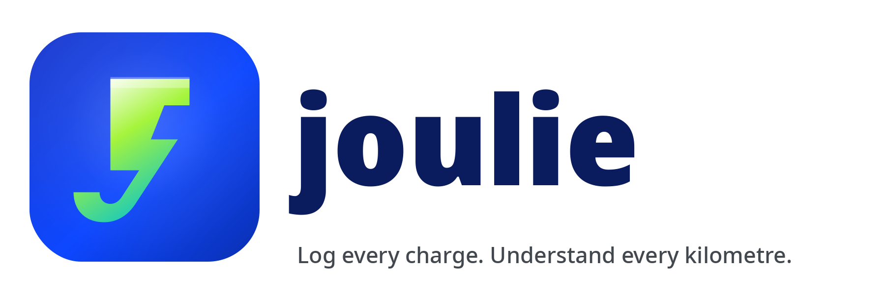

What you log per charge
- Odometer reading, kWh added, AC or DC session
- Location (quick-chips or free text), and optional cost
- State-of-charge percentages. If your charger only shows %, Joulie does the kWh math for you.

Track EV charging sessions, efficiency, cost, and CO2. One joule at a time.
Joulie is a clean, no-nonsense Android app for electric vehicle drivers who want to know exactly how their car uses energy. Log each charge and Joulie tracks the numbers that actually matter.
No analytics, no telemetry, no crash reporting. Your charge data stays on your device unless you explicitly enable Drive backup, and even then only this app can read what it wrote.
Full policy: Privacy Policy.